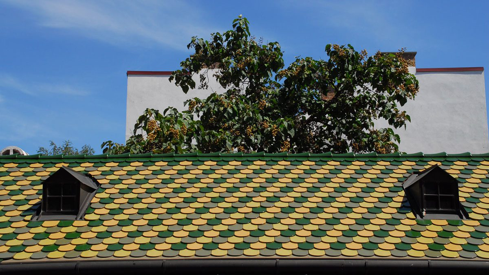

Patrick Hess
Geschäftsführer Wien und St. Pölten, Spenglermeister p.hess@unserdach.at +43 1 813 32 88„Ein Unternehmen ist nur so gut wie seine Mitarbeiter.“ · „Arbeite cleverer, nicht härter.“
Start / Unternehmen
Ein Familienbetrieb seit 1957, ein Meisterbetrieb in Wien seit 1984 – und ein Team, in dem man Jahrzehnte bleibt.
Philosophie
Kundendienst und Qualität haben bei uns absolute Priorität. Jeder Auftrag wird von uns so durchgeführt, als wäre es unser eigenes Dach, unsere eigene Fassade.
Als Meisterbetrieb und Familienbetrieb sind wir sehr stolz auf unsere langjährigen und hochmotivierten Mitarbeiter – unsere Spengler-Dachdecker-Großfamilie.
Um stets am Puls der Zeit und am Letztstand der Technik zu bleiben, drücken wir regelmäßig die Schulbank: Laufende Weiterbildungskurse und Seminare halten die Qualität unserer Arbeiten und damit die Kundenzufriedenheit auf höchstem Level. Neben ihrer Facharbeiterausbildung zum Spengler und/oder Dachdecker sind unsere Mitarbeiter befugt und zertifiziert zur Montage und Überprüfung von Dachsicherheitssystemen und geprüfte Bauwerksabdichter.
„Der, der mit seinen Händen arbeitet, ist ein Arbeiter. Der, der mit seinen Händen und mit seinem Kopf arbeitet, ist ein Handwerker. Der, der mit seinen Händen, mit seinem Kopf und mit seinem Herzen arbeitet, ist ein Künstler.“ Franz von Assisi
In diesem Sinne freuen wir uns sehr, für Sie „künstlerisch“ tätig werden zu dürfen.

Chronik
Der Stammbetrieb wird von Johann und Elisabeth Hess in Obergrafendorf (NÖ) gegründet. Im Laufe der Zeit spezialisiert man sich auf Lüftungsspenglerei – heute zählt der Betrieb in St. Pölten zu den führenden Lüftungsfirmen in ganz Österreich.
In Wien 12 wird eine kleine Bauspenglerei in der Vivenotgasse erworben. Der Wiener Betrieb – inzwischen Bauspenglerei und Dachdeckerei – steht unter der Leitung von Werner Hess.
Fleiß, eine umsichtige Firmenpolitik und zufriedene Kunden lassen den Betrieb stetig wachsen, das Areal wird zu klein. Ein neues Betriebsgelände mit altem Gebäude in der Bendlgasse 11 – ebenfalls im 12. Bezirk – wird erworben, das alte Gebäude zu einem Schmuckstück restauriert. 1997 übersiedelt der gesamte Betrieb an den neuen Standort.
Eröffnung der Zweigniederlassung in St. Pölten – „back to the roots“, dorthin, wo vor über 60 Jahren mit der Spenglerei von Johann und Elisabeth Hess alles begann. Aufgrund des erfolgreichen Kundenaufbaus und der guten Resonanz im Raum Niederösterreich stehen wir seither auch dort jederzeit zur Verfügung.
Mittlerweile blicken wir auf mehr als 40 Jahre erfolgreiche Firmengeschichte in Wien mit unzähligen zufriedenen Kunden zurück. Als Meisterbetrieb mit langjähriger Erfahrung arbeiten wir innovativ und hoch motiviert mit bestens ausgebildeten Mitarbeitern.
Wechsel in der Betriebsführung: Mst. Patrick Hess wird neuer Geschäftsführer. Firmengründer Werner Hess geht in den wohlverdienten Ruhestand.
Zwei Firmen, ein Name: Die Firma Hess in St. Pölten hat sich auf alles rund um gute Luft spezialisiert, die Firma HESS in Wien auf alles rund um das perfekte Dach.
Das HESS Team
Viele unserer Kolleginnen und Kollegen sind seit Jahrzehnten an Bord – manche seit 1988. Das ist im Handwerk keine Selbstverständlichkeit und der beste Beleg für unsere Arbeitsweise.
„Ein Unternehmen ist nur so gut wie seine Mitarbeiter.“ · „Arbeite cleverer, nicht härter.“
„Talent gewinnt Spiele, aber Teamwork und Intelligenz gewinnen Meisterschaften.“
„Eine positive Einstellung zu lösbaren Problemen ist bereits der halbe Erfolg.“
„Freude an der Arbeit lässt das Werk trefflich gelingen.“
„Ein Mensch ohne Phantasie ist wie ein Vogel ohne Flügel.“
„Wo ein Wille ist, ist auch ein Weg.“
„Die großartigen Dinge in dieser Welt passieren nur, weil jemand mehr tut, als er eigentlich müsste.“
„Wenn dir etwas wichtig ist, gibt es kein Aber.“
„In der Ruhe liegt die Kraft.“
„Es sind immer die einfachsten Ideen, die außergewöhnlichen Erfolg haben.“
„Positive Taten setzen eine positive Einstellung voraus.“
„Nur wer das Ziel kennt, findet den Weg.“
„Wähle einen Job, den du liebst, und du wirst nie wieder arbeiten müssen.“
„Wer alles mit einem Lächeln beginnt, dem wird das Meiste gelingen.“
„Die Zukunft gehört denen, die an ihre Träume glauben.“
„Glaub an dein Ziel – sag niemals nie.“
Partnernetzwerk
Diesem Sprichwort leben wir nach. Unser Beruf ist derart vielfältig, dass wir auf gute Partner angewiesen sind. Es ist schön, mit Berufsleuten zusammenarbeiten zu dürfen, welche ihre Begeisterung für ihren Beruf in Form von blitzenden Augen erkennen lassen. Mit unseren Partnern beweisen wir bei jedem Objekt aufs Neue unsere gemeinsame Leistungsfähigkeit.
Genannt sind jene Hersteller und Systeme, die in unseren Leistungsbeschreibungen und Referenzobjekten vorkommen.
Standorte
Ein Dachdecker-Meisterbetrieb aus Wien mit 40 Jahren Erfahrung im Handwerk. Wir stehen Ihnen telefonisch und persönlich zur Verfügung.
Seit 2019 in der Landeshauptstadt. Wir stehen Ihnen gerne telefonisch und schriftlich zur Verfügung; für ein persönliches Beratungsgespräch ersuchen wir vorab um Terminvereinbarung. Selbstverständlich können Sie uns auch gerne in unserer Firmenzentrale in Wien besuchen.